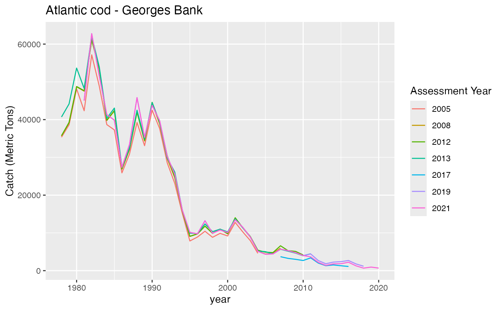
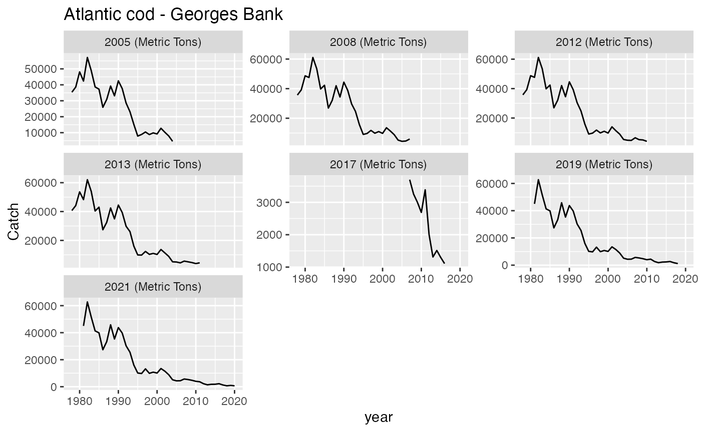
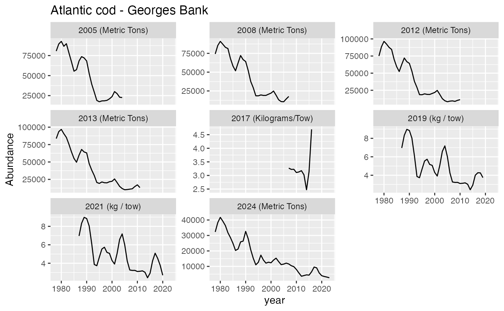
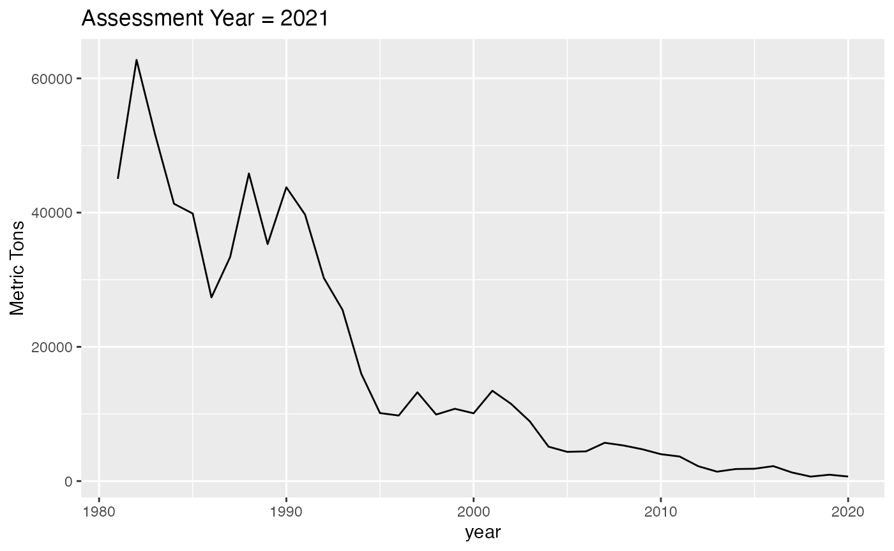

Stock assessment time series data
Time series data for all federally managed stocks are bundled with the package
The ?stock_assessment_data data object looks like
this:
#> # A tibble: 310,221 × 17
#> stock_name stock_id assessment_id year value metric description units
#> <chr> <dbl> <dbl> <dbl> <dbl> <chr> <chr> <chr>
#> 1 Acadian redfish … 10455 14070 1963 10046 Catch Reported C… Metr…
#> 2 Acadian redfish … 10455 14070 1964 8352 Catch Reported C… Metr…
#> 3 Acadian redfish … 10455 14070 1965 8056 Catch Reported C… Metr…
#> 4 Acadian redfish … 10455 14070 1966 8566 Catch Reported C… Metr…
#> 5 Acadian redfish … 10455 14070 1967 10775 Catch Reported C… Metr…
#> 6 Acadian redfish … 10455 14070 1968 6775 Catch Reported C… Metr…
#> 7 Acadian redfish … 10455 14070 1969 12412 Catch Reported C… Metr…
#> 8 Acadian redfish … 10455 14070 1970 16743 Catch Reported C… Metr…
#> 9 Acadian redfish … 10455 14070 1971 20011 Catch Reported C… Metr…
#> 10 Acadian redfish … 10455 14070 1972 19110 Catch Reported C… Metr…
#> # ℹ 310,211 more rows
#> # ℹ 9 more variables: assessment_year <dbl>, jurisdiction <chr>, fmp <chr>,
#> # common_name <chr>, scientific_name <chr>, itis <dbl>,
#> # assessment_type <chr>, stock_area <chr>, regional_ecosystem <chr>Several functions are bundled with the package to aid in filtering the data by species, region, time range, metric etc. Most functions filter using the unique species ITIS code.
Example
Problem: we want to find the latest catch data for Atlantic cod in Georges Bank from either a Benchmark assessment or a full update.
We first need to find the ITIS code for Atlantic cod. We can use the
get_species_itis() function to find this
get_species_itis(stock = "Atlantic cod")
#> # A tibble: 6 × 4
#> stock_name jurisdiction itis stock_id
#> <chr> <chr> <dbl> <dbl>
#> 1 Atlantic cod - Eastern Georges Bank NEFMC 164712 12805
#> 2 Atlantic cod - Eastern Gulf of Maine NEFMC 164712 17281
#> 3 Atlantic cod - Georges Bank NEFMC 164712 10509
#> 4 Atlantic cod - Gulf of Maine NEFMC 164712 10508
#> 5 Atlantic cod - Southern New England NEFMC 164712 17282
#> 6 Atlantic cod - Western Gulf of Maine NEFMC 164712 17280There are three stocks under the jurisdiction of the NEFMC, a Georges Bank, an Eastern Georges Bank, and a Gulf of Maine stock.
Visualize data
Lets visualize all the Catch data for every assessment of the Georges Bank stock
p <- plot_ts(itis = 164712,
stock = "Atlantic cod - Georges Bank",
metric = "Catch",
printfig = FALSE)
p$plot
We can also plot each assessment year in its own facet
p <- plot_ts(itis = 164712,
stock = "Atlantic cod - Georges Bank",
metric = "Catch",
facetplot = TRUE,
printfig = FALSE)
p$plot
The facet plot is particularly useful when assessment methods have
changed over time and consequently the units have also. If we plot the
Abundance instead of Catch we can see how the
assessment data has changed over time from Metric tons prior to 2017 to
kg/tow from 2017 onward
p <- plot_ts(itis = 164712,
stock = "Atlantic cod - Georges Bank",
metric = "Abundance",
facetplot = TRUE,
printfig = FALSE)
p$plot
The plot_ts() function returns a list of two items, a
ggplot object and data frame containing the data used in the plot.
Extract latest data
Some of the assessments visualized above may not be considered
Operational (Analyses conducted to provide scientific
advice to fishery managers with particular focus on determining stock
status and recommending catch limits - from stockSMART Data
Dictionary).
We can use the ITIS code to search for the most recent Catch time
series data that comes from an Operational assessment using
the get_latest_metrics() function. A list containing two
data frames are returned.
- A summary table containing relevant metadata including the number of years of data available and the date range.
cod <- get_latest_metrics(itis = 164712, metrics = "Catch")
cod$summary
#> # A tibble: 5 × 10
#> stock_name common_name stock_area itis assessment_year regional_ecosystem
#> <chr> <chr> <chr> <dbl> <dbl> <chr>
#> 1 Atlantic cod… Atlantic c… Eastern G… 164712 2023 Northeast Shelf
#> 2 Atlantic cod… Atlantic c… Georges B… 164712 2021 Northeast Shelf
#> 3 Atlantic cod… Atlantic c… Gulf of M… 164712 2021 Northeast Shelf
#> 4 Atlantic cod… Atlantic c… Southern … 164712 2024 Northeast Shelf
#> 5 Atlantic cod… Atlantic c… Western G… 164712 2024 Northeast Shelf
#> # ℹ 4 more variables: metric <chr>, FirstYear <dbl>, LastYear <dbl>,
#> # numYears <dbl>- A data table containing the time series data along with additional metadata
cod$data
#> # A tibble: 209 × 20
#> stock_name common_name stock_area itis assessment_year regional_ecosystem
#> <chr> <chr> <chr> <dbl> <dbl> <chr>
#> 1 Atlantic co… Atlantic c… Eastern G… 164712 2023 Northeast Shelf
#> 2 Atlantic co… Atlantic c… Eastern G… 164712 2023 Northeast Shelf
#> 3 Atlantic co… Atlantic c… Eastern G… 164712 2023 Northeast Shelf
#> 4 Atlantic co… Atlantic c… Eastern G… 164712 2023 Northeast Shelf
#> 5 Atlantic co… Atlantic c… Eastern G… 164712 2023 Northeast Shelf
#> 6 Atlantic co… Atlantic c… Eastern G… 164712 2023 Northeast Shelf
#> 7 Atlantic co… Atlantic c… Eastern G… 164712 2023 Northeast Shelf
#> 8 Atlantic co… Atlantic c… Eastern G… 164712 2023 Northeast Shelf
#> 9 Atlantic co… Atlantic c… Eastern G… 164712 2023 Northeast Shelf
#> 10 Atlantic co… Atlantic c… Eastern G… 164712 2023 Northeast Shelf
#> # ℹ 199 more rows
#> # ℹ 14 more variables: metric <chr>, FirstYear <dbl>, LastYear <dbl>,
#> # numYears <dbl>, stock_id <dbl>, assessment_id <dbl>, year <dbl>,
#> # value <dbl>, description <chr>, units <chr>, jurisdiction <chr>, fmp <chr>,
#> # scientific_name <chr>, assessment_type <chr>We can then filter the the data by the Georges Bank stock and plot it.
filteredData <- cod$data |>
dplyr::filter(stock_area == "Georges Bank")
cod$data |>
dplyr::filter(stock_area == "Georges Bank") |>
ggplot2::ggplot() +
ggplot2::geom_line(ggplot2::aes(x = year, y = value)) +
ggplot2::ylab(filteredData |> dplyr::distinct(units)) +
ggplot2::ggtitle(paste0("Assessment Year = ", filteredData |>
dplyr::distinct(assessment_year)))